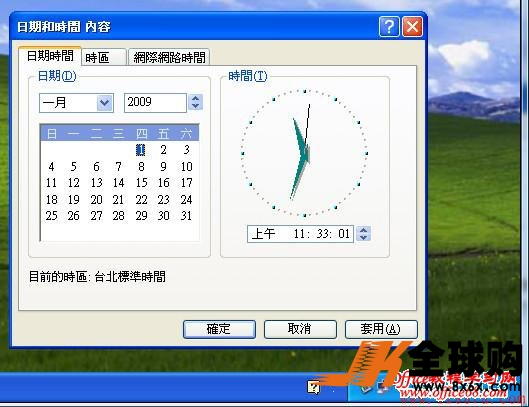

ESXI虚拟机中的时间正确，不和主机同步！！！每次重启Windows虚拟机后时间就不对了

其实在ESXI中我们是可以设置的
首先我们打开vSphere Client登录到ESXI5.0中，右击该虚拟机，选择“编辑设置”

参考下图，切换到“选项”中的“VMware Tools”，把“同步客户机时间与主机时间”勾选上。

还没完，ESXI主机的时间我们也得来看看。
选中ESXI主机，如下图中所示，单击“配置”选项卡；
在下“配置”中我们就可以看到“时间配置”了，这个是对ESXI服务器主机时间的管理，修改ESXI主机时间或是设置与某服务器时间同步都在这里设置。

当前已提供的各国NTP服务器列表
[INTERNATIONAL NTP server list.]
| 区域[zone] | 域名[Domain] | IP池[IP Pool] |
|---|---|---|
| 中国[China] | cn.ntp.org.cn | [58.220.207.226][47.92.108.218](本节点由*方糖科技*赞助), [202.112.29.82] [202.108.6.95] [120.25.108.11] [182.92.12.11] [115.28.122.198] |
| 中国台湾[ChinaTaiwan] | tw.ntp.org.cn | [58.220.207.226](节点失效，暂时解析至国内节点) |
| 美国[America] | us.ntp.org.cn | [24.56.178.140] |
| 新加坡[Singapore] | sgp.ntp.org.cn | [103.11.143.248] |
| 韩国[korea] | kr.ntp.org.cn | [211.233.40.78] |
| 德国[Germany] | de.ntp.org.cn | [131.188.3.220] [131.188.3.223] |
| 日本[Japan] | jp.ntp.org.cn | [133.100.11.8] |
-注：多组IP则为多IP轮询[Group IP was using IP-list polling]。
当前已提供的特殊机房NTP服务器列表
[Special IDC currently provides a list of NTP servers]：
| 区域[zone] | 域名[Domain] | IP池[IP Pool] |
|---|---|---|
| Simcentric | sim.ntp.org.cn | [182.16.3.162] |
-注：仅在特定机房内有效[Only for special IDC]。